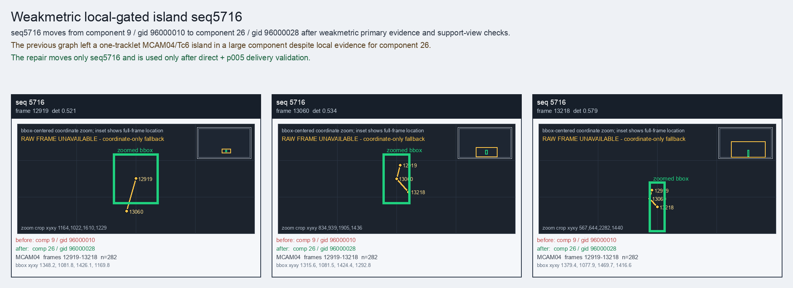

Weakmetric local-gated island seq5716
seq5716 moves from component 9 / gid 96000010 to component 26 / gid 96000028 after weakmetric primary evidence and support-view checks.
Before
component 9, gid 96000010, component_size 245
component 9, gid 96000010, component_size 245
After
component 26, gid 96000028, component_size 201, decision_status subpart_reassign
component 26, gid 96000028, component_size 201, decision_status subpart_reassign
Evidence
target_sim=0.6493, target_margin=0.0419, source_rest_margin=0.6916
Raw frame
unavailable_coordinate_fallback
target_sim=0.6493, target_margin=0.0419, source_rest_margin=0.6916
Raw frame
unavailable_coordinate_fallback
Failure and fix
Old failure: The previous graph left a one-tracklet MCAM04/Tc6 island in a large component despite local evidence for component 26.
New implementation: The repair moves only seq5716 and is used only after direct + p005 delivery validation.
BBox evidence

Moved tracklets
| seq | video | gid | component | frames | dets |
|---|---|---|---|---|---|
| 5716 | vlincs_MS01_MC0001_MCAM04_2024-03-Tc6 | 96000010 -> 96000028 | 9 -> 26 | 12919-13218 | 282 |